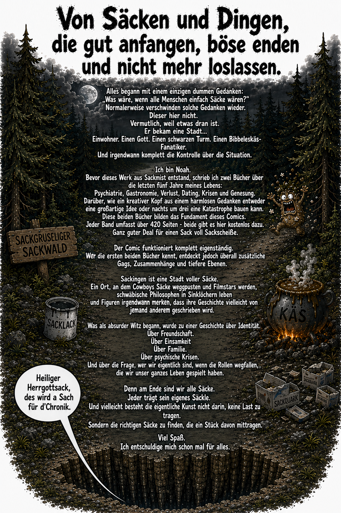

Die Säcke
Der Comicband aus Sackingen. Absurd genug, um eigenständig zu funktionieren, und tief genug, um zwischen all dem Blödsinn doch etwas Echtes zu finden.

14,20 €Download folgt
Der Comicband aus Sackingen. Absurd genug, um eigenständig zu funktionieren, und tief genug, um zwischen all dem Blödsinn doch etwas Echtes zu finden.
